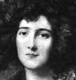
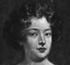
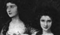

Collective Biographies of WomenAn Annotated Bibliography
Alison Booth
206.
Craven, Mary. Famous Beauties of Two Reigns: Being an Account of Some Fair Women of Stuart and Georgian Times. London: Nash, 1906; 1907. New York: James Pott, 1907.
Search OCLC WorldCat for this title.
Search Google Books for this title.
Craven, Mary. Famous Beauties of Two Reigns: Being an Account of Some Fair Women of Stuart and Georgian Times. London: Nash, 1906; 1907. New York: James Pott, 1907.
TOC: Barbara, Duchess of Cleveland; Louise Renée de Keroualle; Molly Lepell (Lady Hervey); Elizabeth Gunning; Maria Gunning; Mrs. Abington; Anne Seymour-Damer; Jane, Duchess of Gordon; Elizabeth Linley; Georgiana, Duchess of Devonshire; Mary Robinson.
Chapter titles: Introduction: Fashion in Femininity; Barbara, Duchess of Cleveland; Louise Renée de Keroualle, Duchess of Portsmouth and Aubigny; Molly Lepell (Lady Hervey); The Beautiful Gunnings; Mrs. Abington; Anne Seymour-Damer; Jane, Duchess of Gordon; Elizabeth Linley, the Maid of Bath; Georgiana, Duchess of Devonshire; Mary Robinson, “Perdita.”.
Cf. many previous collections of beauties, including Hoppner and Wilkin; T. Willing.
-
Elizabeth Linley
-
Louise de Keroualle
-
 Molly Lepell
Molly Lepell -
Maria Gunning
-
 Elizabeth Gunning
Elizabeth Gunning -
Maria Gunning
-
 Elizabeth Gunning
Elizabeth Gunning -
 Mrs. Abington
Mrs. Abington -
 Mrs. Abington
Mrs. Abington -
 Mrs. Abington
Mrs. Abington -
 Anne Seymour Damer
Anne Seymour Damer -
Jane
-
 Jane
Jane -
Elizabeth and Mary Linley
-
 Georgiana
Georgiana -
 Georgiana
Georgiana -
 Mrs. Robinson
Mrs. Robinson -
 Mary Robinson
Mary Robinson
Search OCLC WorldCat for this title.
Search Google Books for this title.